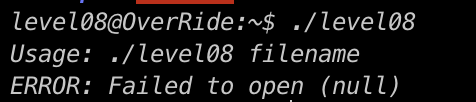

Level08
Etape 1 :
on lance la progammme, on remarque le binaire essai de lis le flag et l'ecrire dans backups sauf qu'il n'a pas les droits
Etape 2 :
on cree une arborescence similaire a celle attendu dans le /tmp ou nous avons les droits

Etape 3 :
Il ne nous reste plus qu'a executer le programme et recuperer le flag